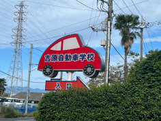
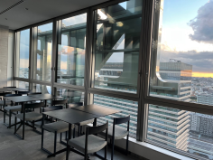
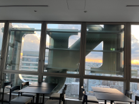
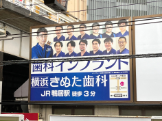
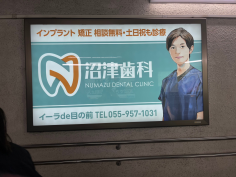

-1-

自動車学校の看板
撮影日時:10月7日 場所:静岡県 撮影者:私
こちらは現在私が通っている自動車学校の看板。形がかわいかったので選んだが、
ぼーっと眺めていた時にふとどっちにも進んでいるように見えて、面白いと思い撮影。
ちょっと昭和レトロの感じがしてとても好きなな看板。
-2-


KUの看板 21階ver
撮影日時:10月5日 場所:神奈川県 撮影者:私
こちらは神奈川大学のKUの看板の裏側。
ビルの上部にあるこれは21階のラウンジから裏側を見ることが出来る。
看板の裏側なんて見る機会がないと感じ選んだ。
-3-


インプラントの顔つき看板
撮影日時:10月5日 場所:神奈川県、静岡県 撮影者:私
今回の一押しはコレ。インプラントの看板はどこも顔を出したがるのだろうか…？(沼津のほうはイラストだが)
ここにはないが、静岡市のインプラント看板も写真付きだ。
思わぬところで地元を感じたある意味思い出の看板。